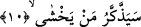
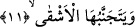

Ben tebliğ edilmesi gerekeni sana söyleyeyim de
Sen ister sözümden öğüt al istersen alma.
Kâşânî şöyle diyor: Allah önce bu dokuzuncu âyette “onun için öğüt ver, eğer öğüt
fayda verirse” diyerek konuyu kısaca ifâde etmiş. Sonra okuyacağımız bu âyetten
itibaren açmaya ve tefsir etmeye başlamıştır.
10. (Allah’tan) korkan öğütten yararlanacak.
Yani senin öğüdünle Allah’tan hakkıyla korkan ya da genel hatlarıyla Allah’tan korkan
kimse öğüt alacaktır. Öğüt alacak kimse bu öğütle ilerler. Kendisine verilen öğüt konusu
üzerinde düşünür ve bu öğüdün gerçek yüzüne vâkıf olur, sonra buna îman eder.
Tefsir-i Kebir’de deniyor ki: İnsanlar âhirete îman konusunda üç gruba ayrılırlar: 1-
Âhiret hayatının olduğuna kesinlikle inananlar.
2- Âhiretin varlığını mümkün görüp fakat bunun var olduğu noktasında kesin bir
inanca sâhip olmadıkları gibi olmadığı konusunda da kesin bir kanâat sâhibi olmayanlar.
3- Âhiret hayatının olmayacağını ısrarlı bir biçimde ifâde ederler.
Bu üç grubtan ilk ikisi kendilerine verilecek olan öğütten yararlanırlar. Üçüncü grubu
teşkil edenler ise yararlanmazlar.
11. Kötü kimse ise öğütten kaçınır.
“Pek bedbaht olan da” yâni; Velid b. Muğiyra ve Ebû Cehil ile benzerlerinde olduğu
gibi Peygamber (s.a.) Efendimiz’e düşmanlıkta ileri giden kâfirlerden bedbahtlıkta ileri
giden “ondan” yâni o öğütten “kaçınacaktır.” Onu kabul kulağı ile dinlemeyecektir.
Okuduğumuz âyette yer alan “el-eşkâ” kelimesi küfürde bedbaht olup ileri giden kâfir
anlamına geldiği gibi mutlak olarak kâfir anlamına da gelebilir. Çünkü mutlak kâfir
fâsıktan daha bedbahttır.
Rivâyete göre okuduğumuz âyette yer alan “men yahşâ/korkan” ifâdesi ile kasdedilen
Hz. Osman b. Afvan (r.a.)’tır. “el-eşkâ” ile kasdedilen ise münafıklardan birisidir. Bu
âyet-i kerime şöyle bir olayın ardından inmiştir.
Rivâyete göre münafıklardan birinin, ensardan birisinin evine doğru yaslanmış bir
hurma ağacı vardı. Bu ağacın meyvesi ensardan müslümanın evinin bahçesine düşer. Bu
zat olayı Peygamber (s.a.) Efendimiz’e aktarır. Peygamber (s.a.) o münafığa haber
gönderir. Efendimiz adamın münafık olduğunu bilmemektedir. Ondan bu hurma ağacını